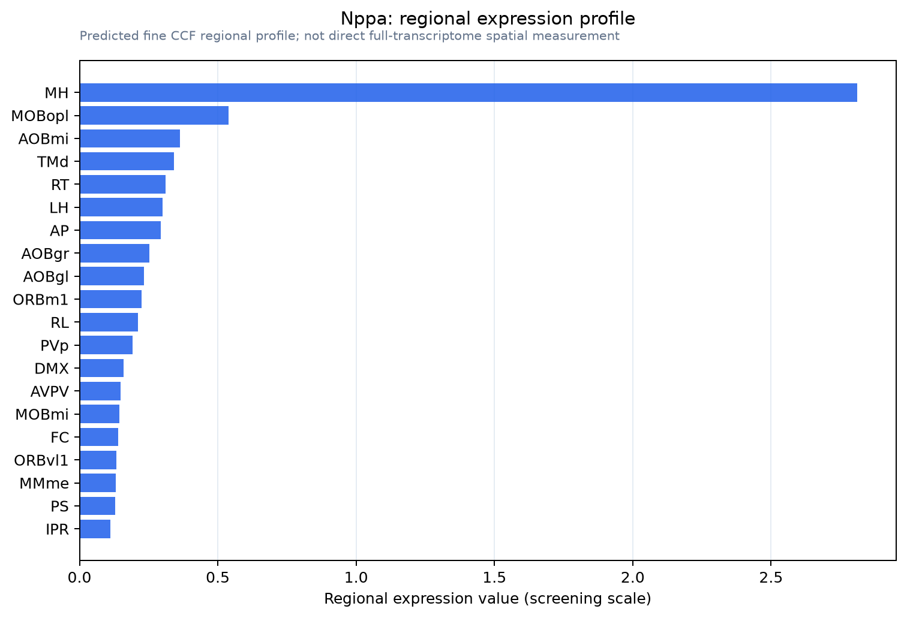

Nppa
Spatial tier: STRICT_EXCLUSIVE · Class: OTHER · Top region: MH (Medial habenula) · Positive regions: 1/554
50.3Discovery Score
48.7Targetability Score
CEvidence grade C
What this means: Nppa: predicted fine-region profile is strict-exclusive, with 1 positive regions out of 554 (limit 12); direct spatial validation is required.
Function in MH: evidence, prediction, innovation
- Gene function
- Nppa encodes atrial natriuretic peptide (ANP), a short secreted peptide hormone best known for lowering blood pressure. It acts on the receptor guanylyl cyclase NPR-A (guanylyl cyclase-A), which makes cGMP; downstream effectors include protein kinase G, cGMP-gated channels and cGMP-stimulated phosphodiesterases.
- Region function
- The medial habenula is an epithalamic relay whose cholinergic/substance P neurons project almost exclusively through the fasciculus retroflexus to the interpeduncular nucleus. This MHb-IPN axis sets nicotine aversion and withdrawal, fear memory expression, anxiety and negative affect.
- Published in this region
- direct Hu et al. 2012 (PNAS) studied ANP signalling directly in the MHb-IPN pathway: ANP raises cGMP in IPN slices, and both ANP and BNP profoundly block optogenetically evoked glutamate release from MHb terminals. The block requires phosphodiesterase 2A, which is richly expressed in MHb axon terminals and depletes cAMP when stimulated by cGMP, and is reversed by directly activating PKA; infusing ANP into the IPN enhanced stress-induced analgesia. Kawata et al. 1985 and Langub et al. 1995 mapped ANP peptide and precursor mRNA across rat brain.
- Predicted function
- Prediction: ANP made by MHb neurons acts as an autocrine or terminal-field brake that converts cGMP signals into presynaptic cAMP depletion and shuts down glutamate release onto the IPN. Deleting Nppa should remove this brake, increasing MHb-IPN transmission, reducing stress-induced analgesia and plausibly increasing anxiety and nicotine withdrawal severity; PDE2A inhibitors should phenocopy the knockout at the synaptic level.
- Innovation
- ★★★☆☆ 3/5 The peptide's action on this synapse is established pharmacologically, but no one has deleted Nppa from MHb neurons themselves or tested its behavioural necessity.
- Tools
- Nppa knockout mice (Jackson Laboratory) and floxed Nppa alleles; synthetic ANP and BNP peptides; NPR-A antagonist A71915 and anantin; PDE2A inhibitors BAY 60-7550 and PF-05180999; anti-ANP antibodies and cGMP biosensors.
- References
Direct evidence located at the region
No Allen ISH section could be located at this region's centroid for the recorded experiments.
Look it up yourself: Allen Mouse Brain ISH for NppaAllen reference atlas: MH (structure 483)ABC Atlas MERFISH viewer(in the ABC Atlas choose dataset MERFISH-C57BL6J-638850-CCF, colour cells by gene "Nppa" or by parcellation_substructure "MH")All genes confined to MH + 3-D brain
Direct spatial evidence
MERFISH REGION LOCATOR

Regional expression figure

Predicted WMB × fine-CCF profile; not direct full-transcriptome spatial measurement.
Spatial profile
Evidence and specificity
- Evidence status
- PREDICTED_FINE
- Direct sources
- None; predicted localization only
- Exclusive threshold
- 12 positive regions out of 554
- Spatial specificity
- 0.452
- Top-region fraction
- 0.304
- Filter status
- PASS
Interpretation limits
- Cell-type-to-region projection is imputed expression, not direct spatial measurement.
- Adult reference atlases do not establish stability across age, sex, strain, state, or disease.
- Transcript abundance does not guarantee protein abundance or genetic-tool performance.